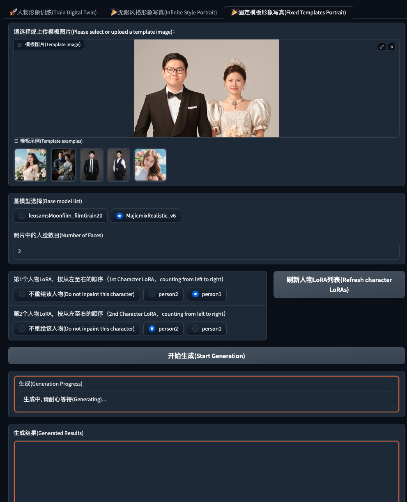
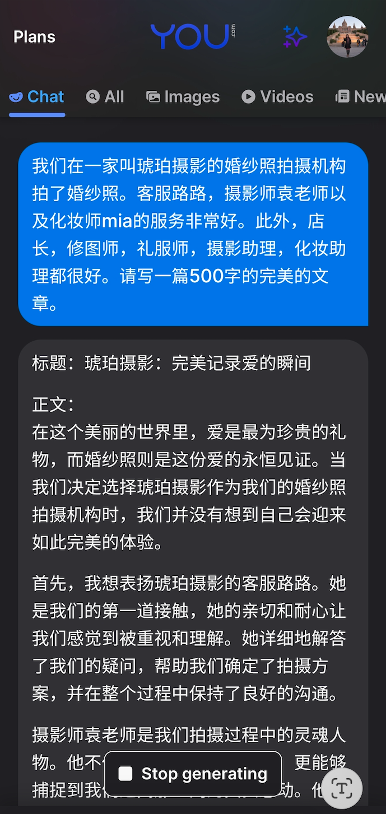
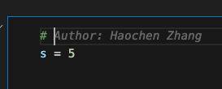

2023-10-31 最近用AI干了啥
目录
总结一下最近用大模型做的事情，还蛮有意思的。
-
工作上已经离不开 you.com ，基本上每个工作日都会打开它：
a. 询问一些基本操作，例如Pandas操作的数据格式和类型之间的转换。
b. debug 代码错误。一个有意思的观察是，可能是因为知道you.com是聊天的模式，所以在问的时候我会加上上下文，但是谷歌搜索就会直接粘贴Error。
c. 有一些思路，但还是不知道怎么做，会去问一下研究现状。
d. 为什么用you.com而不是openAI自己的网站？因为某些原因我访问openAI要疯狂验证，但是you.com不会。
e. 访问you.com不意味着对谷歌搜索的放弃，事实上他不能完全代替谷歌。
-
用chatGPT 4 画了聚会的图，整个过程很欢乐。（感谢孙女士的支持~）
四分之二聚会的时候，chatGPT震惊了全世界，当时我用它生成了一首六人聚会的诗。
短短六个月，openAI疯狂迭代。
六个月之后，四分之四聚会的时候，被DALLE的功能吸引，我用它生成了六人聚会的图。
-
用阿里的faceChain生成了场景图。
9月份拍了婚纱照，有一些图是没有精修的，突然在GitHub上看到了faceChain这个repo。为了试一下faceChain的效果，我上传了一张日常照片，并将这张没有精修的原始婚纱照作为场景。
faceChain将这两张照片结合在一起，生成了一张新的图像。结果证明，生成的图像在除了清晰度方面稍逊一筹外，其他方面都比原始照片效果更好。  当时我是在modelscope提供的算力上跑整个代码的，整个过程很简单，很容易上手。他们最近更新了在线app，应该不用自己手撸代码了。
地址在这：github地址：https://github.com/modelscope/facechain，感兴趣的朋友可以自己试试。
-
用大模型写评价（1）
中午和同事去了一家川菜馆，点了毛血旺和鸡汁笋丝，菜很好吃。结账的时候服务员说给好评可以打折，要写100字的评价。于是我用大模型生成了好评。如下：
”四川菜馆的毛血旺和鸡汁笋丝真是令人流连忘返！毛血旺的麻辣味道让人回味无穷，每一口都充满了辣椒和香料的浓郁香气，让舌尖仿佛置身于四川的火辣风情之中。其中的各种海鲜、肉类和蔬菜的搭配非常丰富，口感鲜嫩，味道醇厚，简直是美食的极致享受！ 而鸡汁笋丝则是一道清淡爽口的佳肴。鸡肉的鲜嫩与笋丝的脆爽相得益彰，调味恰到好处，让人回味无穷。每一口都让人感受到清新的口感，仿佛沐浴在春天的阳光下。这道菜的独特口味和精致的做工，让人对四川菜的烹饪技艺赞叹不已。 总而言之，在四川菜馆用餐的这次经历令人难以忘怀。毛血旺和鸡汁笋丝的美味让人大饱口福，让人对四川菜的独特魅力更加着迷。推荐给所有喜欢美食的朋友们，一定要去尝尝这里的特色菜品，让你的味蕾得到极致的享受！“
-
用大模型写评价（2）
婚纱照其实拍得挺不错的，我们很满意。整个过程都给我们很好的体验，最后交付了之后，我用大语言模型生成了好评，自己对细节做了加工，然后发出去了。（不好意思，给点评贡献了两条AI生成的内容。）

-
使用chatGPT的function calling 和whisper语音控制Notion记录。
这是为了开发公司的一个项目，自己先用Notion进行尝试而做的。主要功能就是用语音模型whisper唤醒Notion，来做记录。Function calling真的很难用，JSON格式的参数一大推乱糟糟的，真的很不优雅。（我不相信这是openAI最后要推行的东西）
-
试用了AI群里面某个群友开发的大模型AI日程助理，还蛮好用的。
它的使用很简单，用自然语言描述要做的事情，他会记录下来，然后到了那天就会发一个聊天消息来提醒你。差不多可以解放双手。
-
托公司的福，用上了GitHub Copilot。它真的优缺点都非常明显。
首先，试用了几个礼拜之后，我对Copilot其实不太指望了，因为它的补全是在补全“我写起来毫不费力只需要花点敲代码的时间”的这种代码上完全没有问题，在我也费劲的代码上，它没有什么帮助。
其次，我什么都没写，打了一个# ，马上就出来了这个名字，这表示这段代码其实是来源于这个叫Haochen Zhang的人的？ 
不过正如辉哥说的，Copilot在写文档的时候很有用。我也有体会，最近把代码仓库从gitee搬到github，补了一波README，基本上都只用tab和enter键，还是蛮高效的。
还有一些其他的感想：
- 如果世界变成一个完全由自然语言组成的世界，那该多么可怕啊。伴随着人类社会的发展，出现了各种各样的结构化的事物。这是因为“结构化”这个词对我们是很有利的。理货架、记账本、各种编号、时间刻度等等，它帮助我们理清了大脑无法很快理清的逻辑，让人一目了然。
但是突然，随着大模型的到来，我们居然要回到用自然语言表达而不是用结构化语言表达的世界？
- 程序员应该担心自己会被取代吗？
从大模型一出来，程序员的危机意识拉满，后来发现大模型带来的乐趣远比恐惧多，开始放肆玩了。昨天看了openAI的dev day也，让人感觉自己被取代是分分钟啊，Sam Altman不是说了嘛，要让不会编程的人也能够做出软件。得了，openAI终于实现了某个网站的口号“人人都是产品经理”。
但是取代了会有新的职业产生的呀！
后来和公司请来给我们做开发分享的人聊天，我发现这种干活很久的人拥有的想法是不一样的，他聊了一下设计原则——这种在我平时想努力写进代码里却经常忘记的东西。因为这个东西，确实是需要经验和审视才能够有的。聊到后来我甚至觉得，代码居然有了一种禅意，一种美感。我相信手艺人的东西不一定比流水线生产出来的好，但是加了一些汗水和心力，也还是会被别人觉察。